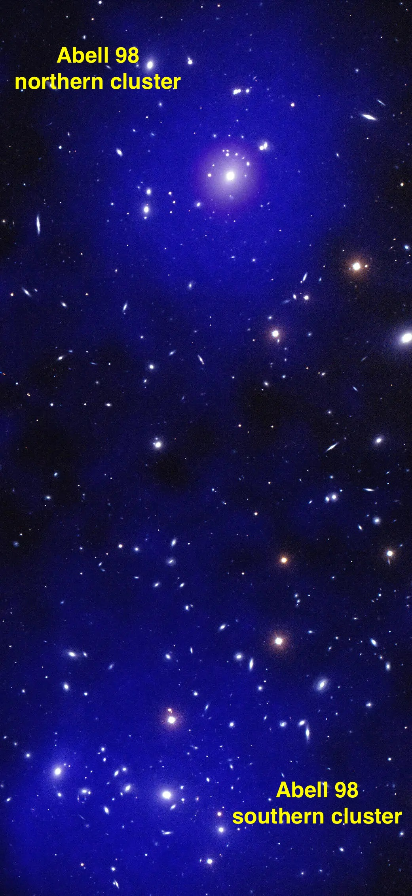

Clusters of Galaxies: Large-Scale structures of Universe
Clusters of galaxies or galaxy clusters, as their name says, hundreds to thousands of galaxies are bound to together by the gravity, making one of the largest gravitationally bound systems in our Universe. Because of their intense gravitation, the baryonic gas trapped inside galaxy clusters or intra-cluster medium is heated to ten to hunderd million degrees kelvin (~ 10^7-10^8 K). Due to this intense heat, intra-cluster medium shines brightly in X-ray. This X-ray radiation from galaxy clusters can not penetrate through earth atmosphere so we need space-based X-ray telescope to observed galaxy clusters.
Fig 2: Abell 98, a system of galaxy clusters including a pair in the early stages of a collision (Sarkar et al. 2022). Hot plasma was observed using Chandra X-ray observatory as shown in blue and purple overlaid optical observations of galaxies from the WIYN telescope appearing white and red. Credits: X-ray:NASA/CXC/CfA/A. Sarkar; Optical: NSF/NOIRLab/WIYN.My primary focus is to understand how this gigantic structures form and evolve across the Universe. According to the \lambdaCDM cosmology, galaxy clusters evolve by merging with other clusters along the cosmic filament, which are among the most energetic events since Big Bang. I study how these merging processes shape the dynamics and properties of the intra-cluster medium using observations from Chandra, XMM-Newton in X-ray, VLA, GMRT in radio and South Pole telescope in sub-mm. In Sarkar et al. 2022, we report the discovery of a axial-shock in a pre-merging galaxy cluster, Abell 98.
Hydrodynamical simulations, such as IllustrisTNG, reveal that early galaxies contain significantly more interstellar gas than stellar mass, reflecting their nascent stages of formation. This increased amount of interstellar gas, fueled by pristine gas inflows, may act as a cosmic mixer, diluting the metal-enriched gas within the interstellar medium (ISM) and reducing the overall metallicity.